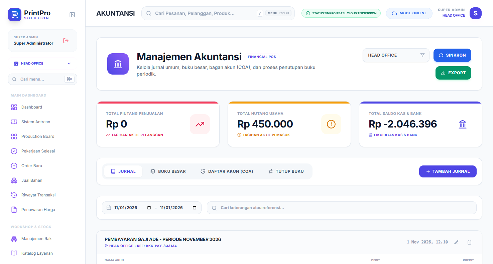

Bab 19 dari 27
Akuntansi dan Jurnal
Modul Akuntansi & Kas menampilkan bagan akun, jurnal, dan laporan keuangan dasar.

19.1 Akun standar
Sistem memakai kode akun umum, antara lain:
| Kode | Akun |
|---|---|
| 1101 | Kas |
| 1111 | Bank |
| 1201 | Piutang Usaha |
| 1301 | Persediaan Bahan |
| 1303 | Persediaan Merchandise |
| 2103 | Pajak Keluaran |
| 2104 | Uang Muka Pelanggan (DP) |
| 4101 | Pendapatan Cetak |
| 4102 | Diskon Penjualan |
| 4103 | Pendapatan Merchandise |
| 5001 | Harga Pokok Penjualan |
Jurnal dibuat otomatis dari order, pembelian, biaya, dan kasbon. Anda dapat meninjau dan menyesuaikan bila diperlukan.
19.2 Alur pencatatan order
Saat order dibuat:
- Kas/Bank bertambah sebesar yang dibayar.
- Piutang bertambah bila ada sisa.
- DP dicatat sebagai uang muka pelanggan.
- Pendapatan diakui sesuai item (cetak vs merchandise).
- HPP dan persediaan disesuaikan bila produk memakai stok.
19.3 Praktik yang disarankan
- Jangan mengubah order yang sudah dijurnal tanpa penyesuaian.
- Rekonsiliasi bank minimal sebulan sekali.
- Tutup buku bulanan setelah semua transaksi dicatat.
- Simpan laporan laba rugi dan neraca untuk arsip.